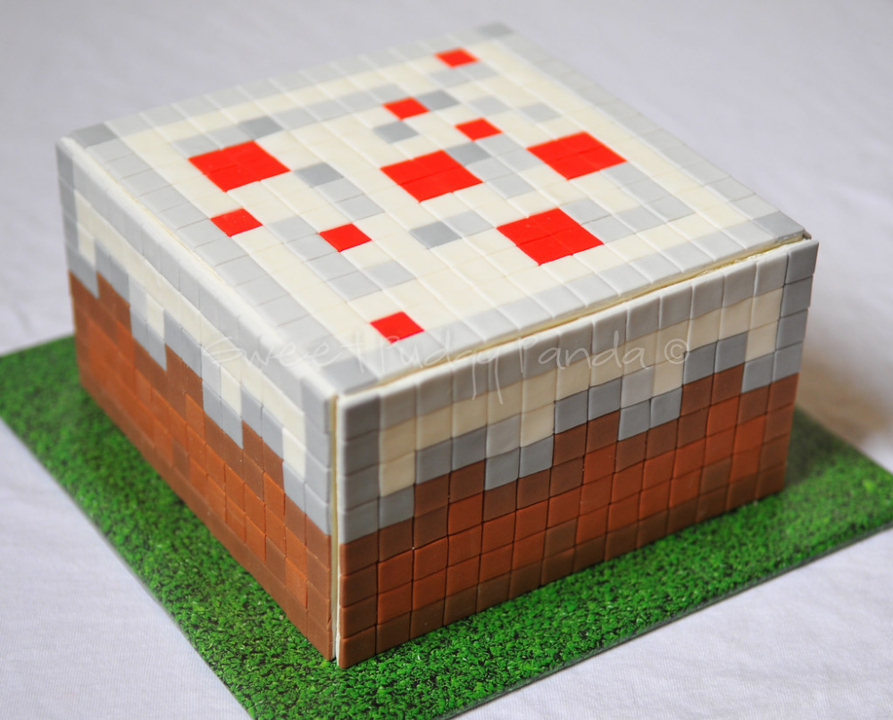

Receita de Bolo do Minecraft
Aprenda a fazer um delicioso bolo do Minecraft com a nossa receita:
Bolo do Minecraft

Ingredientes:
- 3 xícaras de farinha de trigo
- 2 xícaras de açúcar
- 1 xícara de leite
- 1/2 xícara de manteiga
- 4 ovos
- 1 colher (sopa) de fermento em pó
Modo de Preparo:
- Pré-aqueça o forno a 180°C.
- Em uma tigela, misture a farinha de trigo, o açúcar e o fermento em pó.
- Adicione a manteiga derretida e o leite, e misture bem.
- Acrescente os ovos, um de cada vez, e bata bem a cada adição.
- Despeje a massa em uma forma untada e enfarinhada.
- Leve ao forno por cerca de 40 minutos, ou até que o bolo esteja dourado e firme ao toque.
- Retire do forno, deixe esfriar e sirva.